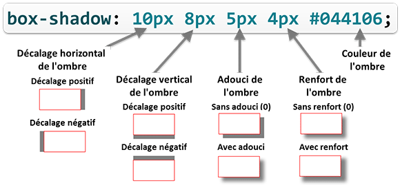

La propriété box-shadow
permet de définir une ou plusieurs ombres sous une boîte.
h2 {
box-shadow: 10px 8px 5px 4px #044106;
}
Une ombre est définie avec 4 valeurs de longueur et une valeur
de couleur.

5 valeurs pour définir une ombre
Le décalage horizontal place l'ombre de la boîte à sa droite (valeur
positive) ou à sa gauche (valeur négative).
Le décalage vertical place l'ombre de la boîte en bas (valeur
positive) ou en haut (valeur négative).
La 3éme valeur permet d'adoucir le contour de l'ombre en le rendant
flou. Plus la valeur est élevée et plus l'ombre est adoucie.
La 4éme valeur définit la taille de l'ombre de couleur unie avant le
début du flou. Cette valeur peut être négative.
Pour avoir des ombres réalistes, l'utilisation des fonctions de
couleur avec transparence (rgba() ou hsla())
donne les meilleurs résultats.
Tester les ombres de boîte
Les valeurs de décalage horizontal et vertical sont obligatoires.
Les valeurs de flou, de renfort et de couleur sont facultatitves. Si
la valeur de flou ou de renfort n'est pas précisée elle sera par
défaut de 0. Si la couleur n'est pas précisée, c'est la couleur du
texte qui sera utilisée (propriété color).
Ombre interne
On peut créer des ombres internes avec le mot-clé inset comme valeur supplémentaire de la propriété box-shadow.
Tester les ombres de boîte
Plusieurs ombres
On peut affecter plusieurs ombres (externes et/ou internes) à une boîte. Il suffit de séparer par une virgule les groupes de valeurs
définissant chacune des ombres.
On reprend ici l'exemple précédent des boutons en ajoutant une ombre interne sombre en bas pour améliorer
l'effet 3D et une ombre externe quand il y a survol avec la souris.